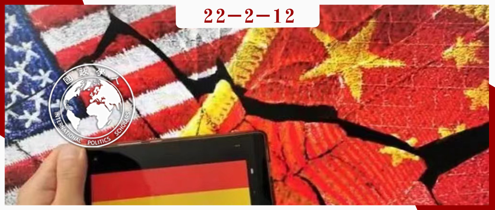
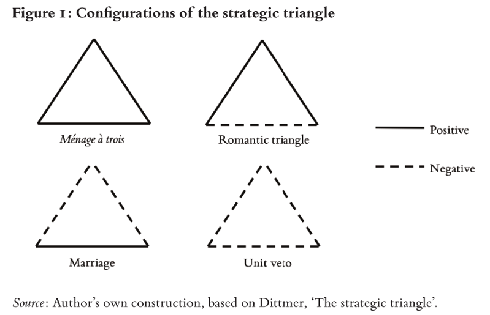
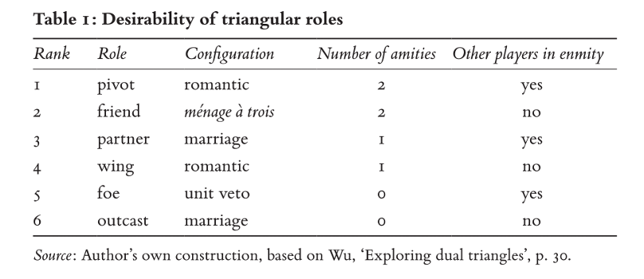
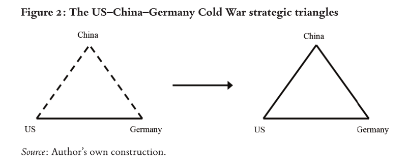
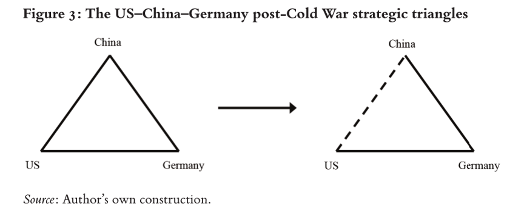

收录于合集

作品简介 ****
作者： Sebastian Biba，法兰克福大学中国/东亚区域研究政治学教授、研究员。
编译： 张潇文，山东大学外国语学院法语（国际组织）专业。
来源： Sebastian Biba, Germany’s relations with the United States and China from a strategic triangle perspective, International Affairs , Volume 97, Issue 6, November 2021, Pages 1905–1924.
DOI: https://doi.org/10.1093/ia/iiab170

导读
中美竞争日益加剧，深刻影响着当前和未来的国际体系。自美国总统拜登上台后，白宫意识到美国需要世界各地盟友和伙伴的支持，才能成功应对外界认为中国对美国全球霸权和所谓的自由国际秩序构成的挑战。这标志着美国将利用“胡萝卜和大棒”来敦促其盟友和伙伴在对华和对美关系上选边站。美国的盟友和合作伙伴如何处理这种三角关系？本文采用了“战略三角法”，将德国置身于中美德战略三角结构中，展示了其作为一个驱轴国家面临的优势和风险，对德国当前的行为选择和未来的道路进行了分析。
本文的亮点在于，将三个国家之间的三种双边关系置于一个三角形中。作者用自制的三角图非常直观、明晰地展现了STA理论得出的四种模式，区分了国家扮演的六种角色，并根据每一种角色的优劣进行了排位。这种方式兼具理论性和生动性，轻松地解释了为什么德国——以及美国其他盟友——在中美竞争加剧的情况下，不愿靠近美国而远离中国。
译者认为，本文的不足之处在于STA理论过度简化双边关系，仅关注国家利益在国际关系中的作用。并且该理论将国际关系简单地分为积极的或消极的，但是在后冷战时代，国家间关系普遍变得更加复杂。但STA具有高度清晰的概念和高度聚焦的关注点，在某种程度上可以弥补其不足，并能够说明国家行为的目的。
目前，拜登政府一反特朗普政府的做法，试图重建跨大西洋盟友关系。另一方，中国日益崛起，其市场吸引力和国际影响力不容小觑。那么其盟友该如何在中美竞争中寻求一条微妙的出路呢，相信本文会给出合理的解释和推测。
引 言
鉴于德国在欧盟举足轻重的地位以及欧盟的国际影响力，在日益深化的中美竞争中，德国对美国来说是一个重要的议题。尽管德国在中美竞争中总是更倾向于后者，但其对于是否全面接受美国的反华态度仍然犹豫不决。正如即将离任的默克尔在达沃斯论坛上的讲话：“我非常希望避免中美两个阵营的建立。如果我们要么围绕美国，要么围绕中国，那么这对很多社会来说是不公平的。”[1]
日益严重的国际形势迫使德国进行明智和理性的分析。为什么德国不愿与美国站在一起对抗中国？德国当前(或替代)行为的可能性和陷阱是什么？为了回答这些问题，本文采用了美国学者洛厄尔•迪特默（Lowell Dittmer）在上世纪80年代初提出的 “战略三角法”（strategic triangle approach, STA） 。[2] STA为我们的分析提供了明确的三角逻辑，而其他大多数国际关系理论都聚焦于双边关系。更重要的是，STA的分析强调参与者的国家利益（主要根据国家安全和福利进行定义）。
本文的结构如下：作者首先介绍了STA的主要理论主张，强调了“罗曼蒂克”结构中的驱轴国家具有的矛盾性，即优势和高风险并存。此后，作者描绘了从冷战时代到现在的中美德战略三角的发展，并说明了德国最近是如何被置于驱轴地位的。自此，德国一直寻求维持这一角色，因为其与中美的友好关系有利于自己的安全和经济利益。最后，本文以STA为基础，对德国当前的行为和可选择的道路进行了讨论，展现了德国正面临着艰难决定的境况。
编 译
01
战略三角法（STA）作为理论框架
迪特默率先阐述了STA，为之前的研究提供了理论和分析的基础，但他并没有创造“战略三角”这个术语。在此基础上，台湾学者吴玉山对STA作出了重要的理论贡献。
战略三角理论具有一些不言自明的原则。首先， STA的运作是基于以下假设， 即战略三角中的三个双边关系要么是积极的（以“友好”状态为特征)，要么是消极的（以“敌对”状态为特征） 。战略三角结构具有四种模式：1.“三人共处型”（ménage à trois）：由三种友好关系组成，三方互为朋友；2.“罗曼蒂克型”（romantic）：由两种友好的关系和一种敌对的关系组成，其中驱轴国与两个侧翼国保持着积极关系，两翼彼此之间有消极的关系；3.“稳定婚姻型”（marriage）：由一种积极关系和两种消极关系组成，两个伙伴国家之间保持积极关系，而两者均对被排斥者持有敌对关系；4.“单位否决型”（unit veto）：包括三种消极关系，三方互为敌人(见图1)。

图1
值得注意的是，国家的不同位置可以根据他们的“期许”进行排名。一方面，一个参与国与其他参与国保持友好关系比敌对关系更可取；另一方面，另外两个参与国之间的敌对关系比他们之间的友好关系更符合期许（因为害怕两者合作串通反对自己）。结果表明，六种可能角色之间的偏好排序如下：1.驱轴（pivot）；2.朋友（friend）；3.伙伴（partner）；4.侧翼（wing）；（5）敌人（foe）；（6）被排斥者（outcast）（见表1）。
表1

换句话说，在“罗曼蒂克”关系中扮演核心角色可以说是STA中最有利的位置，因为这为参与者提供了最大程度的积极关系，同时还会导致剩下的两个参与者互相争斗。
然而，驱轴位置极具挑战性并很难维持，因为战略三角中的双边格局不是一成不变的，而是动态的。处于不利位置的国家通常会设法转向较有利的位置，从而提高他们的地位；与此同时，处于有利地位的国家试图防止其作用下降。因此，一方面，驱轴国家位置意味着此国家可以（试图）在其他两国之间的战斗中从双方获得让步。但让步并非绝对，因为对于一个软弱的驱轴国家，两翼采用的方式可能不是说服和让步，而是欺凌和胁迫。另一方面，驱轴国也会受到两个侧翼国的交叉压力。因为侧翼国会争取驱轴国的青睐，积极寻求将“罗曼蒂克”关系转变为“稳定婚姻”关系，将自己的角色升级。
总而言之，在战略三角中扮演驱轴角色意味着在双方之间保持微妙的平衡。这需要较高的灵活性并保持对侧翼国的吸引力。
02
过去与现在的中美德战略三角
严格地说，中国、美国和德国之间战略三角的出现相对较晚。在冷战时期和冷战后初期，中德之间的双边关系无足轻重，因此可谓并不存在中美德战略三角。随着中德双边关系的发展，特别是在显著增加的经济交流和由此产生的相互依存关系的推动下，三国之间的战略三角关系在2010年左右逐渐形成。
1. 德国成为驱轴的漫长而被动的道路
回顾过去的中、美、德三角关系，一个很重要的起点是美国与前西德的双边关系。两国在1955年波恩加入北约（NATO）后成为盟友，西德对美国产生极大依赖，这种依赖也体现在对外关系上。冷战期间美国、中国和西德之间的战略三角，最终都是由当中美之间的摇摆状态所决定的。在中美苏三角关系的背景下，中美关系一直是消极的，直到20世纪70年代初，中美关系出现缓和，并逐渐呈现积极状态。因此可以说，在冷战时期的前半段，中美德（西德）战略三角呈现出美德的“稳定婚姻”模式，而中国作为被排斥者。在冷战的后半段，三方变成了STA所称的“朋友”，中美德战略三角呈现出“三人共处”的模式。（见图2）

图2
然而，随着冷战的结束，中美德三角关系中偶尔出现的磕磕碰碰变得更加明显，于是“三人共处”关系变得不稳定。总的来说，美国与统一后的德国仍然是三对关系中最积极和最稳定的，双方持续是非常密切的军事和经济伙伴。但这一时期，美德也出现了明显的分歧。例如德国在2003年拒绝加入美国对伊拉克的干预，这在后来被认为是美德相互理解和利益协调减弱的“转折点”。又如美德在利比亚问题上的分歧、2013年“棱镜门”都加速了美德关系的衰弱。
对于中美关系来说，1991年苏联解体，中美建交最重要的基础和共同利益消失，双方关系岌岌可危。人权问题也成为中西方争议的焦点。然而，在上世纪90年代和本世纪头十年，中国开放经济的强大吸引力和巨大潜力最终在中美和中德关系中占据了上风，中国在2001年加入世贸组织（WTO）也证明了这一点。
对于中德关系来说，德国对华政策优先考虑开放市场、为德国公司建立公平市场环境这一首要原则，而中国期望获得一流的德国技术。其结果是中德之间蓬勃发展的经济关系，其主要特征是“技术换市场”，在2010年代初，两国经济接近于经济共生。双方还建立了80多个对话机制，其中许多是政府高层对话。
中美关系不得不面对更大的挑战。尽管两国仍然能够在一些共同关心的问题上进行合作，例如反恐和气候合作，但中美两国之间的战略不信任随着北约轰炸中国驻南斯拉夫大使馆、南海问题等问题爆发而显现。一方面，双方在经济上更加相互依存，另一方面，中国迅速增加的军费开支和固有的政治体制引起了美国越来越多的关注。奥巴马政府的“重返亚洲/再平衡”政策、《跨太平洋伙伴关系协定》（Trans- Pacific Partnership，简称TPP），均旨在对抗中国崛起。
2017年，特朗普的上台加剧了已经在酝酿的负面三角关系。他臭名昭著的“美国优先”(America First)策略将中国和德国列为其最突出的两个目标。在特朗普任期内，美德关系达到了“战后最低点”，原因包括德国的巨额贸易顺差、贫乏的国防开支、对俄看似密切的关系，以及两国在伊朗核协议和空袭叙利亚问题上的分歧。在中国问题上，特朗普政府不仅将中国拖入一场公开的、旷日持久的“贸易战”；还在新冠疫情上“污名化”中国，且在2017年12月的《美国国家安全战略》中直接将中国描述为一个“修正主义”大国，其目标是塑造一个“与美国价值观和利益相悖的世界”。
因此，自冷战结束以来，中美德战略三角关系逐渐恶化，由“三人共处”关系转为脆弱的“罗曼蒂克”关系，以德国为驱轴，中美为两翼。（见图3）即使美德关系也因为特朗普的政策而出现波动，然而总体上这种罗曼蒂克关系还是可以成立的。

图3
值得注意的是，中美德之间相对较晚出现的“罗曼蒂克”关系、德国处于驱轴国家地位，显然不是德国有意识的积极战略和政治运作的结果，而主要是中美关系恶化的结果。尽管德国在这一发展过程中没有扮演任何因果角色，但它一直显示出保持驱轴地位的意愿。
2. 德国维持驱轴地位的积极作为
尽管特朗普在2021年1月被拜登取代，但中美关系依然消极。在这种日益困难的情况下，德国仍然寻求与华盛顿和北京保持长期以来的积极关系。为了实现这一目标，德国试图在军事领域讨好美国，同时寻求在经济方面安抚中国。
在此背景下，德国最近非常热衷于向华盛顿发出信号：它不仅意识到自己对美国安全保障的依赖，而且愿意通过北约自己做出更大的安全和军事努力，以配得上这些保障。这一信号表明，德国在安全政策上承担了更多责任，近年来国防预算显著增加（仅2019年就增加10%）。此外，德国还宣布向东亚（并通过南海）派遣一艘海军舰艇。该计划自2021年8月开始实施，并立即受到美国政府的欢迎。
一方面，德国政府和强大的德国工业联合会（BDI）近年来越来越关注与中国的经济关系。这导致德国人认为，这个亚洲国家不再仅仅是一个经济“伙伴”，而是一个经济“竞争对手”。另一方面，2020年中国连续五年成为德国最重要的贸易伙伴。德国企业力图在中国市场占有一席之地。在此背景下，德国强调，无论是在经济上还是在外交上与中国脱钩都不是德国的选择。
03
评估德国在中美德三角关系中的行为
从STA的逻辑来看，德国目前的行为是可以理解的，考虑到德国的安全和福利已经从与中美的积极双边关系中获益良多，当时的“三人共处”模式非常友好，德国仍然不遗余力地维持这两种有利的关系。更重要的是，根据STA理论，在新的“罗曼蒂克”格局下，德国与美国和中国保持积极关系，实际上意味着德国的角色从朋友提升到了驱轴。然而，该角色也带来了矛盾和不稳定性。因此，有必要分析一下德国作为驱轴国家迄今为止的表现，以及德国当前的代替选择。
1. 作为驱轴的挑战:在让步和压力之间行走
一方面，处于驱轴的地位可能会创造机会，让其他两个侧翼国做出让步，因为两翼各自寻求提升其在三角关系中的作用，他们试图将“罗曼蒂克”转变成“稳定婚姻”关系，以将自己的角色从侧翼国提升至伙伴国，或者努力防止出现相反的结果。2020年12月《中欧全面投资协定》（CAI）的签署就是一个很好的例证。
尽管德国在与美国和中国保持积极关系方面有着持久的利益，但我们应该记住，德国与美国的关系一直比与中国的关系更密切或更积极。因此，中国必须对可能的美德”稳定婚姻“关系趋势特别敏感，从而避免在战略三角中变成最不利的被排斥者。
与此同时，CAI的谈判已经进行了7年，当时的德国欧盟理事会主席，包括默克尔本人，都渴望在预设的年底最后期限前达成协议。因此，欧盟抓住了拜登团队的过渡时期，使中国在CAI谈判中做出了让步。尽管这项协议受到了严厉的批评，但一些专家认为它是“成功的”。显然，如果德国不是中美德三角关系中的驱轴，这一结果几乎不可能实现。
然而，另一方面，让步也有可能带来负面效果。侧翼国也可能对驱轴国施加压力，甚至是胁迫，原因仍然是为了促进“稳定婚姻”关系或是为了阻止它的出现。相对较弱的驱轴（如德国），特别容易受到来自两翼的压力，因为它往往更依赖于侧翼国，因此必须小心管理各方不同的期望。我们可以举5G的例子。特朗普政府强烈反对美国盟友在5G网络中使用中国华为的技术，否则就可能失去获取美国情报的机会。然而，如果德国方面真的将华为排除在其国内市场之外，中国将采取报复行动，可能会以安全为由将德国汽车挡在中国市场门外。德国汽车制造商越来越依赖中国市场。2019年，德国最大的汽车制造商大众汽车(Volkswager) 有40%的汽车在中国销售。面对来自两翼的巨大压力，德国一直在走一条微妙的路线。具体来说，与其他欧洲国家不同的是，德国没有表现出禁止任何供应商使用华为5G网络的意愿，转而寻求通过一部新的IT安全法来提高市场准入门槛。
总而言之，德国作为驱轴国家的现实经验反映了STA理论考虑所确定的矛盾心理。那么其他选择呢?
2. 驱轴的代替方案：作为朋友或者伙伴的利弊
德国首选的替代方案很可能是回归“三人共处”关系。尽管从严格的理论角度来看，这种格局的重新出现将意味着德国从当前的驱轴地位下降，但可以假设，德国仍然会欣然接受。一个原因是，在这种模式下，德国作为朋友的表现格外出色。另一个原因是，在德国看来，两翼为重新转向欧洲而展开的竞争所带来的好处，很可能会被巨大的交叉压力所抵消。德国作为这三个国家中最弱的国家，一直在承受且肯定会越来越多地承受交叉压力。
然而，“三人共处”关系的唯一问题是，这种状态极难返回。从特朗普到拜登的过渡似乎证明了一些学者的观点是正确的， 中美竞争不是制度的问题，而是国际关系结构的问题 。更重要的是，在这种情况下，德国（以及整个欧盟）没有很好的机会来调解这场迫在眉睫的超级大国冲突。
第二种选择是德国(重新)与美国“联姻”。拜登领导下的美德关系正处于上升阶段，而中德关系正变得越来越紧张。从STA的角度来看，从一个“罗曼蒂克”中的驱轴国到一个“稳定婚姻”结构中的伙伴国，会比到“三人共处”结构中朋友的角色退化更大。但是，“稳定婚姻”模式通常比“罗曼蒂克”模式稳定得多，因为对于被排斥的一方来说，要改变三角关系的格局通常要困难得多。因此，美国和中国对德国的相互压力将大大减少，并在某种程度上使德国的外交政策更加直截了当，从而可能至少在一定程度上补偿其角色的退化。
即便如此，这种角色的退化也会给德国带来其他一些严重不利因素。首先，美德“联姻”将把中国变成一个完全的对手。尽管中德关系近年来变得不那么积极，消极的中德关系与德国国家利益不一致。这不仅是出于经济原因，而且也由于需要共同解决全球问题，并就非洲的稳定未来进行合作。此外，即使在拜登的领导下，美德“联姻”也将由华盛顿主导。正如默克尔一再指出的那样，这并不总是符合德国的利益。另一个重大风险涉及特朗普主义幽灵的重现。虽然拜登确实是一个“跨大西洋主义者”，高度重视美国与欧洲和德国的伙伴关系，但德国不能确定，四年后特朗普或其他致力于推行其政策的人不会再次当选。从STA的角度来看，特朗普的第二次总统任期很可能意味着拜登领导下的美德短暂“稳定婚姻”的突然结束，并将此格局转变为“单位否决”。对德国来说，这将导致其角色急剧下降，因为德国将从驱轴（第1位）变成敌人（第5位）。这将使欧洲国家在安全和福利方面处于极其脆弱的地位。
总而言之，我们可以得出这样的结论：德国作为驱轴国家的备选项要么不现实，要么与驱轴国家方案一样充满矛盾。
04
总结
毫无疑问，美国和中国之间日益激烈的大国竞争让德国进退两难。本文采用了战略三角方法，对德国在这个三方关系中的行为进行了理论上的评估。分析表明，德国在默克尔领导下的做法，即长期以来与中美保持整体友好关系的利益，大体上符合STA的理论主张。换句话说，积极关系比消极关系更有利，因为前者能产生更多与国家核心利益（如国家安全和经济福利）相关的利益。
然而最近，中美德之间的三角关系从“三人共处”转变为“罗曼蒂克”，德国现在处于两翼之间的驱轴位置。一方面，德国在三角关系中的角色已经上升到最高，可能会迫使美国和中国做出让步，以防德国与对方勾结。但另一方面，鉴于德国是三角关系中最弱的参与者，德国很容易受到两翼的交叉压力，因为两翼都寻求提升自己在三角关系中的地位。此外，未来中美对抗可能加剧，可能使德国面临来自中美越来越大的交叉压力。
尽管如此，替代方案也会带来问题。在德国能力范围内，回到曾对德国非常有利的“三人共处”模式是很难实现的。鉴于拜登的跨大西洋行动和中国日益增长的实力，美德形成排斥中国的“稳定婚姻”关系的想法正在升温。但这样的“联姻”也会有严重缺陷，德国对华政策将会服从于美国的偏好，而与本国偏好不一致。此外，特朗普主义幽灵重返白宫对德国也具有巨大的负面影响。
就目前而言，德国在后默克尔时代对美国和中国的定位悬而未决。如果德国想要坚持它的驱轴国家策略，就需要尽可能减少中美两国产生的交叉压力和胁迫。因此，无论是在经济、技术、军事还是其他方面，德国需要与欧洲伙伴和其他感兴趣的国家合作，以减少对这两个超级大国的依赖。
最后，本文应用STA理论解释了为什么美国的盟友和合作伙伴，在日益卷入中美竞争的情况下，不愿选边站。随着中美竞争的继续展开，美国“重返亚洲”战略能否持续下去，只有时间才能证明。
参考文献
[1] Cited in Stuart Lau and Laurenz Gehrke, ‘Merkel sides with Xi on avoiding Cold War blocs’, Politico , 26 Jan. 2021,
https://www.politico.eu/article/merkel-sides-with-xi-on-avoiding-cold-war- blocs/.
[2] See Lowell Dittmer, ‘The strategic triangle: an elementary game- theoretical analysis’, World Politics 33: 4, 1981, pp. 485–515.
词汇整理
中欧全面投资协定 EU–China Comprehensive Agreement on Investment (CAI)
战略三角法 Strategic triangle approach (STA)
配置，结构，布局 Configuration
驱轴，中心点 Pivot
审校 | 胡瑞琨 肖龙
排版 | 云琪布日 梁羽
文章观点不代表本平台观点，本平台评译分享的文章均出于专业学习之用, 不以任何盈利为目的，内容主要呈现对原文的介绍，原文内容请通过各高校购买的数据库自行下载。

国政学人
支持学术公益与知识传播
微信扫一扫赞赏作者 __赞赏
已喜欢，对作者说句悄悄话
取消 __
发送给作者
发送
最多40字，当前共字
上一页 1/3 下一页
长按二维码向我转账
支持学术公益与知识传播
受苹果公司新规定影响，微信 iOS 版的赞赏功能被关闭，可通过二维码转账支持公众号。